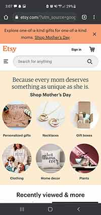

White Space and Clean Design
Amazon
Amazon WebsiteWhite space is utiized well on the Amazon webpage. While scrolling down the page you notice that each section is broken up by unused space. This makes it easier to differentiate between each section. This also gives it a sleeker design since it gives purpose to the white space.
Parc:Repetition
Etsy
 Etsy WebsiteRepetition is utilised on the Etsy webpage through a couple of design choices. By creating similar shapes around sections that are related it makes it easier to navigate, rather than relying on titles to lead you there are symbols and shapes that connect items and elements.
Parc:Alignment
YouTube
 Youtube Website
Youtube Website
On the mobile version of YouTube all of the videos are in a singular column. By aligning the videos this way it makes navigation easier by a simple scroll of the page. There's no extra space on the sides of the videos, and it makes navigation smooth and the layout looks sleek and clean.